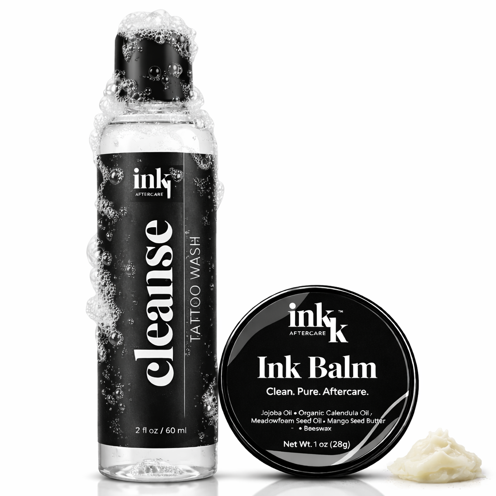
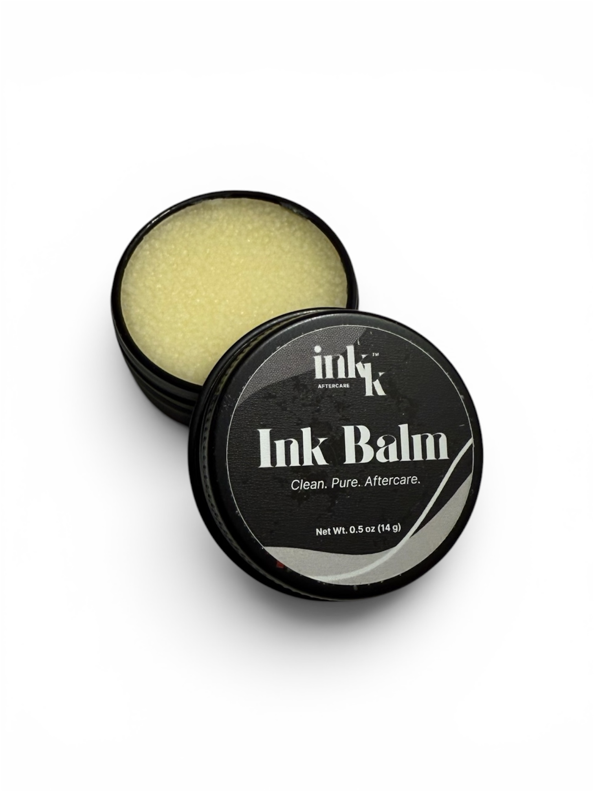
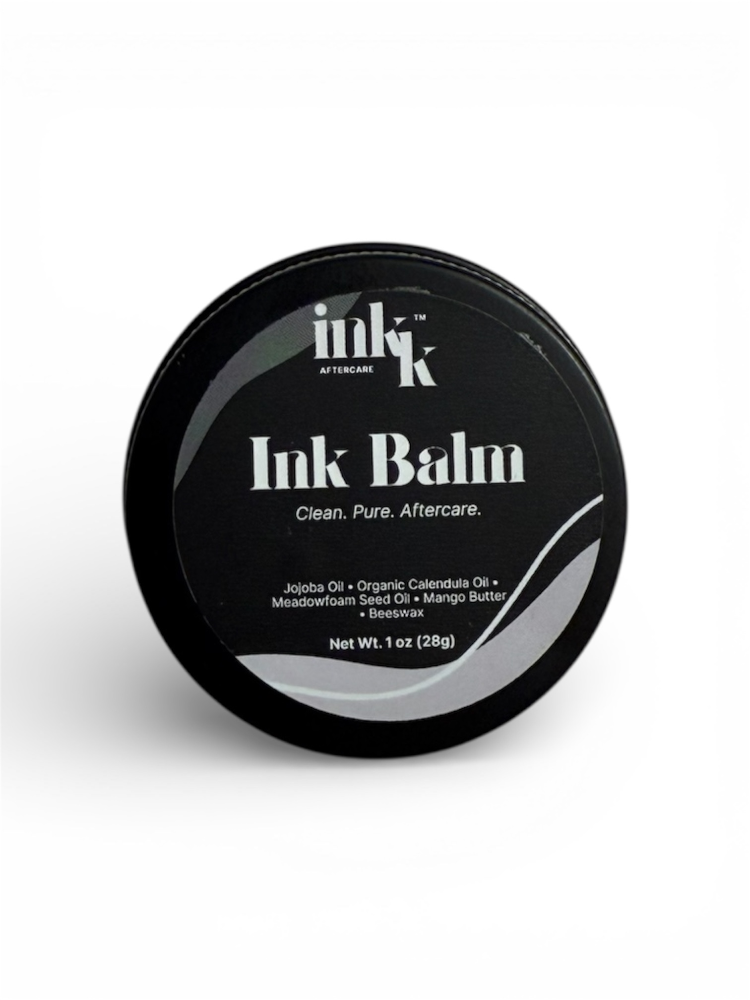
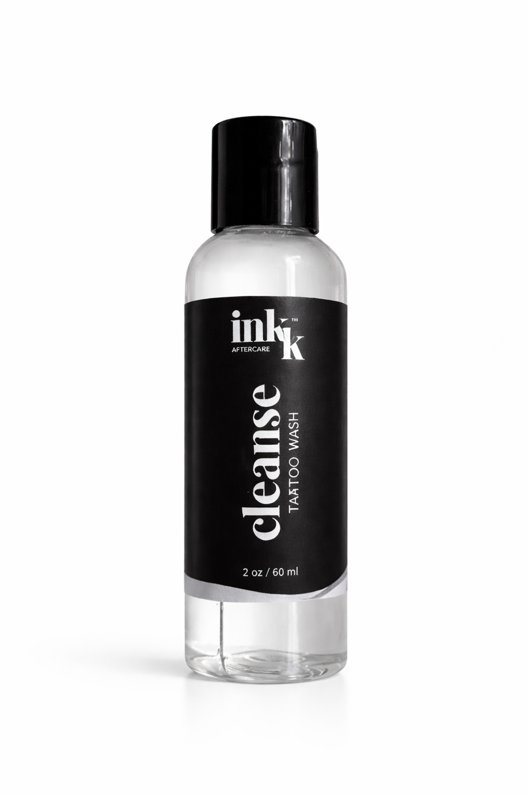
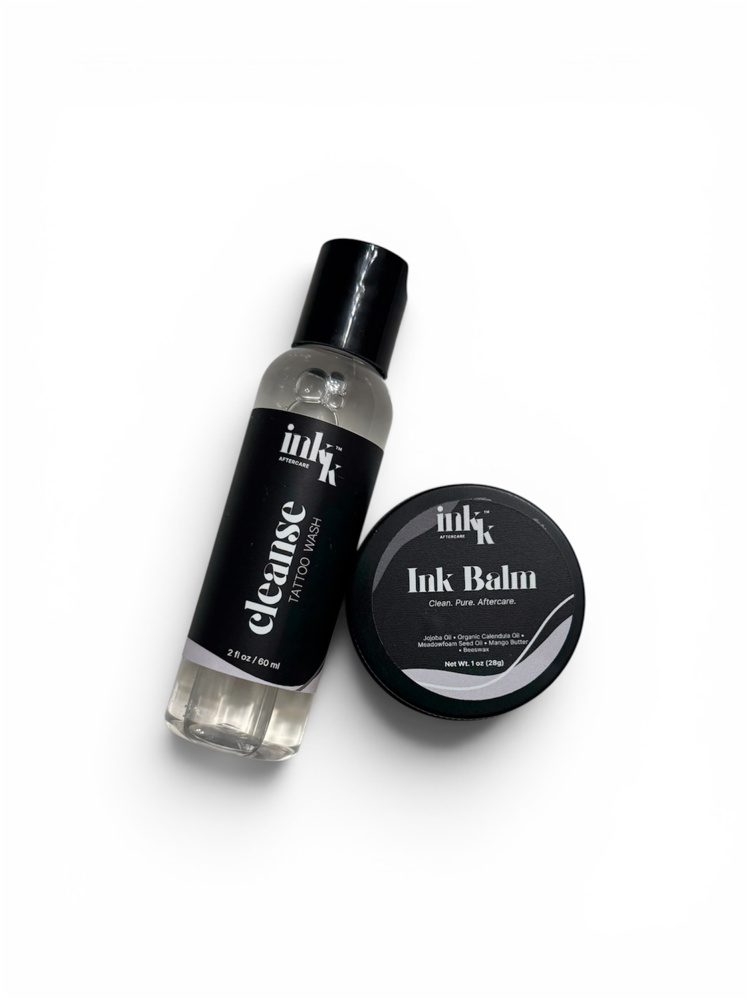
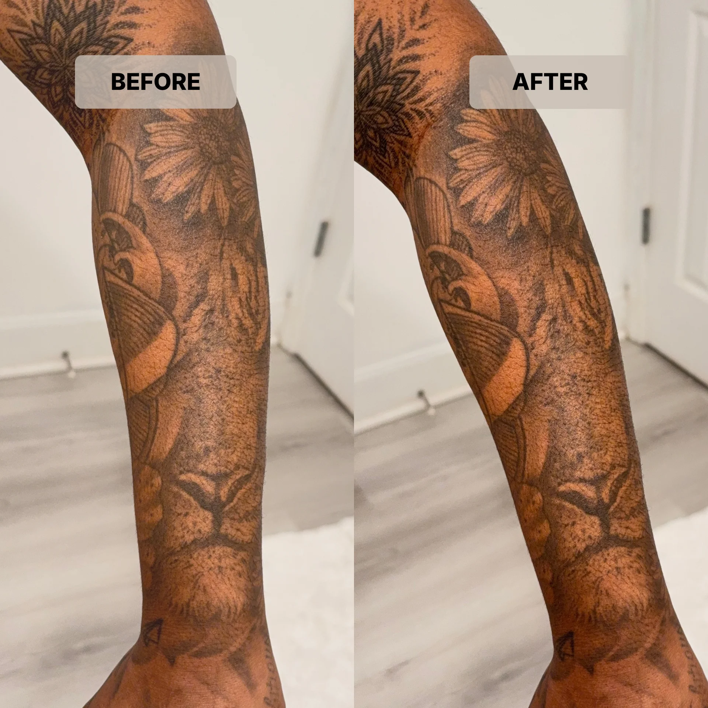

Inkk Aftercare
By Inkk Studios · Atlanta, GA
Clean. Pure. Aftercare.
Made for fresh ink. Formulated for real results.

Shop the collection

Ink Balm
0.5 oz · 14g
Our compact balm — perfect for small pieces and on-the-go touch-ups. Formulated with natural oils and beeswax to lock in moisture, reduce peeling, and keep your ink vibrant through the healing process.
$12
Order via Text →
Ink Balm
1 oz · 28g
Our full-size balm — ideal for larger pieces and full healing cycles. The same clean formula in a size that lasts. Jojoba oil, calendula, meadowfoam seed oil, mango butter, and beeswax working together so your tattoo heals the right way.
$18
Order via Text →
Inkk Cleanse
Tattoo Wash · 2 oz / 60ml
A gentle, fragrance-free wash made specifically for fresh tattoos. Removes excess ink, plasma, and impurities without stripping the skin. Use twice daily during the healing process.
$14
Order via Text →
Inkk Aftercare Kit
1oz balm + 2oz wash · best value
Everything you need for a clean heal — start to finish. Wash away impurities with Inkk Cleanse, then seal and protect with Ink Balm. The complete routine in one kit.
$28
Order via Text →Ink Balm ingredients
Results

How to use
Wash your fresh tattoo with Inkk Cleanse 2–3 times daily using clean hands. Pat dry with a clean paper towel.
Apply a thin layer of Ink Balm to the tattooed area after each wash. Less is more — you want a light coat, not a thick layer.
Repeat for 2–3 weeks until fully healed. Keep out of direct sunlight and avoid soaking in water during the healing process.